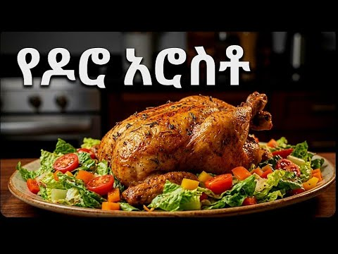

Doro wot

Doro Arosto is a traditional Ethiopian roasted chicken dish known for its rich flavor and delicious spices. The chicken is seasoned with a blend of Ethiopian spices and roasted until golden brown and tender. It is often served with injera, bread, or other side dishes, making it a tasty and satisfying meal for family gatherings and special occasions.
Ingredients
- Chicken
- Onion
- Garlic
- Ginger
- Ethiopan berbere spice
- Niter kibbeh or cooking oil
- Salt
- Black pepper
- Lemon juice
Steps
- Wash your hands and prepare the chicken, onion, garlic, ginger, and spices.
- Mix the chicken with lemon juice, salt, black pepper, and your preferred spices.
- Chop the onion, garlic, and ginger, then mix them with berbere and niter kibbeh or cooking oil.
- Coat the chicken with the seasoning mixture.
- Place the chicken in a roasting pan and roast in a preheated oven at 190°C (375°F) until fully cooked and golden brown.
- Check that the thickest part of the chicken reaches 74°C (165°F).
- Serve hot with injera, bread, or your favorite side dish.
Home